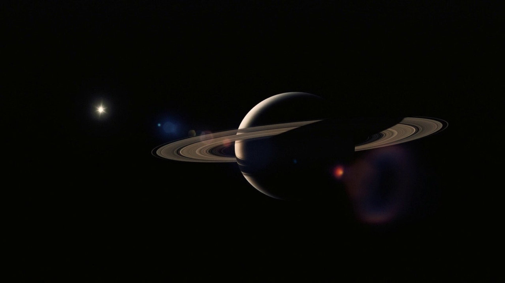
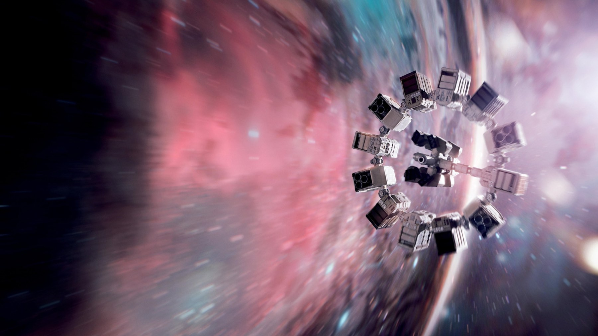
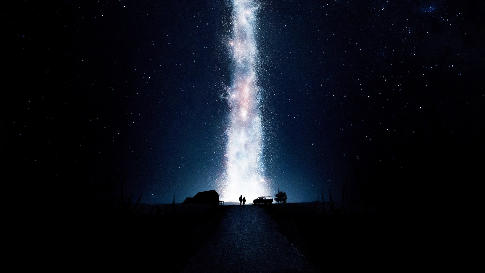

Interstellar, il finale spiegato (spoiler)
Il buco nero, la libreria e l'orologio: cosa succede a Cooper negli ultimi quaranta minuti del film di Nolan e cosa è scienza e cosa invenzione
Un uomo cade dentro un buco nero e si ritrova in una libreria infinita, dove ogni scaffale è un istante della camera di sua figlia. Interstellar, uscito in Italia il 6 novembre 2014, concentra nell'ultima ora le idee più audaci e più discusse di Christopher Nolan. Questa pagina spiega il finale e rivela cosa succede a Cooper, quindi se non avete visto il film fermatevi qui: sono 169 minuti che meritano di essere visti senza sapere nulla.
Cosa succede davvero a Cooper
Cooper, interpretato da Matthew McConaughey, si lascia cadere nel buco nero Gargantua per consentire ad Anne Hathaway, la dottoressa Brand, di raggiungere l'ultimo pianeta possibile. Invece di morire si ritrova nel tesseract, una struttura tridimensionale che rappresenta il tempo come uno spazio da attraversare. Dal suo interno può guardare la stanza di Murph, la figlia lasciata sulla Terra, in tutti i momenti della sua vita, e può spingere oggetti: far cadere libri, muovere la polvere, agitare le lancette di un orologio.
Con quell'orologio Cooper trasmette in codice Morse i dati quantistici raccolti dentro il buco nero. Murph, diventata scienziata (Jessica Chastain), li decifra e completa l'equazione che permette di far partire dalla Terra le stazioni spaziali. Poi il tesseract si richiude, Cooper viene espulso vicino a Saturno e si risveglia su una stazione dove ritrova Murph ormai anziana, in punto di morte. Lei lo manda via: Brand è sola su un pianeta lontano e ha bisogno di lui.
Chi ha messo il wormhole vicino a Saturno
La domanda più ripetuta sul film è questa: chi ha costruito il tesseract? Il film risponde per allusioni. Cooper lo capisce da solo dentro la libreria: quegli esseri sono «noi», ma esseri umani del futuro, evoluti oltre le tre dimensioni. Non sono i «loro» a salvare l'umanità: è l'umanità che si salva da sola, nel momento in cui un suo membro ci arriva. Il percorso ha una struttura circolare: la gravità che Cooper trasmette a Murph è la stessa che gli ha permesso di andare dove è andato.
È un paradosso, e il film lo sa. Nolan non cerca di scioglierlo con un trucco di montaggio: lo trasforma nel tema. Chi fa un salvataggio impossibile lo fa perché qualcuno prima di lui l'ha fatto per lui. Nelle nostre ricerche non abbiamo trovato una dichiarazione di Nolan che spieghi punto per punto il significato dell'ultima ora: la lettura che proponiamo è nostra, non del regista.
L'amore è davvero una forza fisica?
Nel film la dottoressa Brand sostiene che l'amore sia «l'unica cosa che trascende dimensioni di tempo e spazio». È il punto che divide di più. Secondo MYmovies, Gabriele Niola riconosce al film una grande ambizione e un'originalità di regia, e legge il finale come un racconto in cui il legame tra genitore e figlio supera distanze impossibili. È la lettura più generosa, e la più vicina a ciò che si vede.
Noi la leggiamo in modo un po' diverso. L'amore non sposta il tesseract: lo guida. Cooper non salva Murph perché la ama in astratto, ma perché sa dove cercarla, cioè in quella stanza, in quel ticchettio dell'orologio. Il sentimento è il criterio con cui sceglie quale momento raggiungere. Se si è in cerca di una spiegazione fisica, non c'è: è la parte in cui il film smette di essere scienza e diventa dichiaratamente racconto.

Dove finisce la scienza
Il film si regge su una consulenza vera. Il fisico Kip Thorne, Nobel per la Fisica, ha lavorato come produttore esecutivo e consulente scientifico e ha fissato, secondo Wikipedia, due regole: niente che violasse le leggi fisiche note, e ogni speculazione doveva nascere dalla scienza e non dalla fantasia di uno sceneggiatore. Gargantua è stato disegnato partendo dalle equazioni della relatività generale, con alcuni fotogrammi che richiedevano fino a 100 ore di calcolo.
Lo stesso rigore si vede nel tempo che passa in modo diverso a seconda della gravità. Sul pianeta vicino al buco nero, dice la trama riportata da Wikipedia, quando Cooper e Brand ripartono sono passati 23 anni sull'Endurance: è il motivo per cui Cooper ritrova Murph già adulta. Sono questi il tempo e la perdita, non i mostri o le astronavi, il vero cuore emotivo del film. Il tesseract, invece, è l'invenzione: la scienza arriva fino al buco nero, il cinema comincia dopo.

Come lo ha costruito Nolan
Il film è costato 165 milioni di dollari secondo TMDB e, sempre secondo Wikipedia, ha incassato circa 681 milioni nella prima uscita e quasi 783 milioni contando le riedizioni. Hans Zimmer ha firmato la colonna sonora usando un organo del 1926 del Temple Church di Londra e ha tenuto 45 sessioni di registrazione, il triplo di quelle per Inception. La fotografia di Hoyte van Hoytema usa le macchine IMAX in modo più massiccio rispetto agli altri film di Nolan, compresa una montata sul muso di un Learjet.
La critica fu divisa: a ottobre 2026 Wikipedia riporta il 73% di recensioni positive su Rotten Tomatoes e 74/100 su Metacritic, con elogi per l'ambizione visiva e riserve sui dialoghi e sulla complessità del racconto. Il film vinse l'Oscar per gli effetti visivi alla 87ª edizione, su cinque candidature.
Cosa guardare alla seconda visione
Rivedendolo, osservate i primi venti minuti: la polvere sulle finestre, le parole di Murph sul «fantasma» in camera, i libri che cadono. Tutto ciò che sembra un mistero domestico diventa, nell'ultima ora, un messaggio che Cooper spedisce a se stesso. È il modo in cui Nolan trasforma una storia di fantascienza in una storia di famiglia, ed è la ragione per cui, nonostante le imperfezioni, il finale commuove anche chi non segue la fisica.
Dove vederlo
In Italia, secondo TMDB a ottobre 2026, Interstellar è in streaming su Netflix, Sky Go, TIMVISION, NOW e HBO Max e disponibile a noleggio su Apple TV, Google Play, Rakuten TV, Amazon Video e CHILI. Su schermo grande, in sala IMAX, dà il meglio: se vi capita una riedizione, andateci.
Il finale di Interstellar è sentimentale e lo dichiara: dopo averci fatto credere alla fisica, Nolan chiede di credere a un padre che lascia un messaggio nel tempo. Per noi la scommessa riesce, perché la scienza regge fino al buco nero e l'emozione regge fino all'ultimo minuto.
Domande frequenti
Cos'è il tesseract di Interstellar?
Una struttura costruita da esseri umani del futuro dentro il buco nero, in cui il tempo diventa uno spazio da attraversare. Così Cooper può comunicare con Murph.
Chi ha messo il wormhole vicino a Saturno?
Nel film sono esseri umani del futuro, evoluti oltre le tre dimensioni: lo capisce Cooper nella libreria.
Dove si vede Interstellar in Italia?
Secondo TMDB a ottobre 2026 è in streaming su Netflix, Sky Go, TIMVISION, NOW e HBO Max.